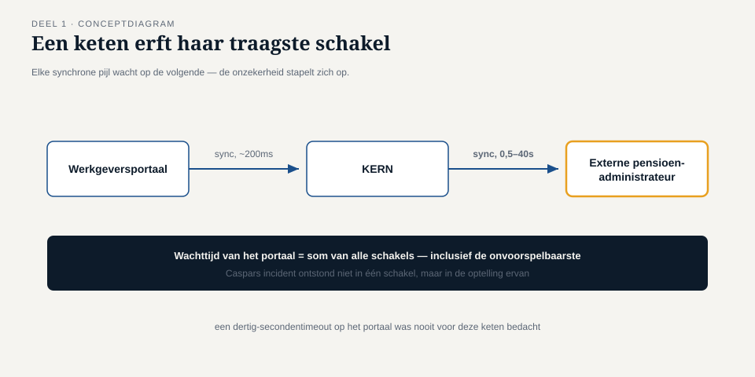
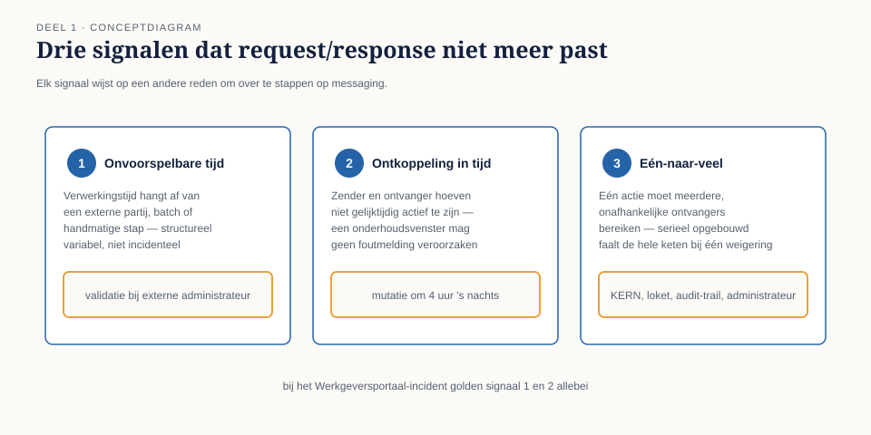

Deel 1 — Van synchroon naar asynchroon: waarom messaging
Reader · Ductus-cursus Enterprise Integration Patterns · niveau 1 (fundament) · deel 1 van 10
1.0 De koppeling die zeven keer per dag vastliep
Op de derde maandag na de stopzetting van WGP 2.0 kreeg Caspar Rijnders zijn eerste incident als integratiearchitect bij Meridiaan Pensioen N.V. De koppeling tussen het Werkgeversportaal en KERN, het kernsysteem, was die ochtend zeven keer blijven hangen. Niet gecrasht — hangen. Het portaal wachtte op een antwoord van KERN dat niet kwam, de gebruiker zag een draaiend wieltje, en na dertig seconden verscheen een foutmelding die niemand kon plaatsen: "time-out bij mutatieverwerking".
De koppeling zelf was, technisch gezien, keurig gebouwd: een REST-aanroep, synchroon, met een duidelijk contract. Het Werkgeversportaal stuurt een mutatie, wacht op het antwoord, en toont dat antwoord aan de gebruiker. Zolang KERN binnen een paar honderd milliseconden reageert, werkt dit onberispelijk.
Het probleem was niet de koppeling. Het probleem was wat er sinds twee weken ván afhing. KERN was uitgebreid met een asynchrone verwerkingsstap — een validatie tegen de externe pensioenadministrateur, die zelf weer afhankelijk was van een derde partij. Die validatie kon een halve seconde duren, of veertig seconden, afhankelijk van de belasting bij de administrateur. Het Werkgeversportaal wist dat niet. Het deed wat het altijd deed: de aanroep doen en wachten, met een time-out van dertig seconden omdat niemand zich ooit had voorgesteld dat het langer zou kunnen duren.
Caspar loste het incident die dag op door de time-out naar negentig seconden te verhogen. Dat is geen oplossing, het is uitstel — en dat wist hij, want binnen een kwartaal zou de externe administrateur een nieuwe koppeling opleveren die nóg een stap toevoegde.

Dit deel gaat over waarom die oplossing structureel niet houdbaar is, en wat het alternatief is.
1.1 Wat request/response veronderstelt
Elke synchrone aanroep — of het nu REST, RPC of iets ouders is — rust op drie veronderstellingen die zelden hardop worden uitgesproken:
De ontvanger is nu beschikbaar. Niet over vijf minuten, niet zodra de wachtrij leeg is: nu, op het moment van de aanroep.
De ontvanger antwoordt binnen een voorspelbare tijd. De aanroeper reserveert een thread, een verbinding, een gebruiker die wacht, voor de duur van dat antwoord. Hoe lang dat duurt, moet ergens binnen een marge liggen die de aanroeper vooraf heeft ingeschat — vandaar de time-out.
Aanroeper en ontvanger zijn tegelijk operationeel. Niet alleen nu beschikbaar, maar ook: als de aanroeper herstart, herstelt hij de aanroep opnieuw zelf. Er is geen derde partij die onthoudt dat de aanroep nog moet gebeuren.
Deze drie veronderstellingen zijn precies wat de API-cursus als vertrekpunt neemt en met gateways, statuscodes en circuit breakers beheersbaar maakt. Ze blijven waar. Wat verandert is de vraag wat je doet zodra één van de drie niet meer standhoudt — niet als uitzondering, maar structureel, omdat een keten schakels bevat die je niet beheerst.
Kernzin 1 van de cursus: elke synchrone aanroep in een keten erft de traagste, minst beschikbare schakel van die keten — of je dat nu wilde of niet.
Dat is precies wat er bij het Werkgeversportaal gebeurde. Niemand had een langzame koppeling gebouwd. Er ontstond er één, door optelling, op een plek waar niemand naar keek.
1.2 Drie signalen dat request/response niet meer past
Niet elke trage koppeling is een reden om over te stappen. Er zijn drie signalen die, los of samen, aangeven dat het probleem niet met een langere time-out is op te lossen.
Signaal 1: de verwerkingstijd is inherent onvoorspelbaar. Niet "meestal snel, soms traag" door toevallige belasting, maar structureel variabel omdat er een externe partij, een batchproces of een menselijke handeling in de keten zit. De validatiestap bij de externe administrateur is hiervan een voorbeeld: soms is het antwoord er in milliseconden, soms moet een medewerker daar handmatig ingrijpen.
Signaal 2: zender en ontvanger hoeven niet gelijktijdig te bestaan. Als het Werkgeversportaal een mutatie aanlevert om vier uur 's nachts, hoeft KERN niet op dat moment wakker te zijn. Sterker: als KERN op dat moment een onderhoudsvenster heeft, moet de mutatie gewoon blijven staan tot het weer online is — niet foutmelden aan een werkgever die toevallig 's nachts een dienstverband beëindigt.
Signaal 3: één actie moet meerdere, onafhankelijke ontvangers bereiken. Een mutatie in KERN moet niet alleen worden verwerkt, maar ook het Nabestaandenloket bijwerken, een audit-trail vullen, en mogelijk een signalering naar de externe administrateur triggeren. Vier synchrone aanroepen achter elkaar bouwen betekent: de totale wachttijd is de som van vier wachttijden, en als één van de vier onbereikbaar is, faalt de hele keten — ook voor de drie andere die het wél hadden gered.

Bij het Werkgeversportaal-incident golden signaal 1 en 2 allebei. Dat is waarom het geen incident was dat om een dikkere lijn vroeg, maar om een ander soort verbinding.
1.3 Wat messaging concreet anders doet
Messaging vervangt de directe aanroep door een tussenstation: een bericht wordt op een kanaal gezet, en de zender is klaar zodra het bericht daar veilig staat — niet zodra de ontvanger het heeft verwerkt.
Dat ene zinnetje bevat het hele verschil. Bij request/response valt "verzonden" en "verwerkt" praktisch samen: de aanroeper weet het antwoord voordat hij verdergaat. Bij messaging vallen ze uit elkaar. De zender weet alleen: het bericht staat op het kanaal. Wat de ontvanger ermee doet, en wanneer, is een aparte vraag.
Dit lost de drie veronderstellingen van request/response niet stuk voor stuk op — het maakt ze overbodig:
| Veronderstelling bij request/response | Wat messaging daarvoor in de plaats zet |
|---|---|
| Ontvanger is nu beschikbaar | Het kanaal bewaart het bericht tot de ontvanger er is |
| Antwoord binnen voorspelbare tijd | Zender gaat verder zodra het bericht geplaatst is; verwerkingstijd van de ontvanger raakt de zender niet |
| Beide tegelijk operationeel | Het kanaal overbrugt de tijd ertussen |
De prijs die hiervoor wordt betaald, komt in 1.4 en in deel 7 en 8 uitgebreid terug: als je niet meer wacht op een antwoord, moet je expliciet regelen wat je zeker weet en wat niet. Bij request/response krijg je die zekerheid gratis — een uitgebleven antwoord ís een foutmelding. Bij messaging moet je zelf bedenken hoe je weet of een bericht is aangekomen, en wat er gebeurt als het twee keer aankomt.
1.4 Wat je ervoor inlevert
Messaging is geen upgrade zonder nadeel. Drie dingen worden structureel moeilijker, en het is beroepsoneerlijk om dat pas in deel 7 te vermelden.
Volgorde is niet meer vanzelfsprekend. Bij een synchrone keten van aanroepen is de volgorde de volgorde van de code. Bij messaging kunnen twee berichten via verschillende paden, met verschillende snelheid, bij de ontvanger aankomen — en soms is dat prima, en soms is het een dataintegriteitsprobleem. Deel 8 gaat hier volledig over.
Foutafhandeling verschuift van "meteen zichtbaar" naar "ergens in een wachtrij". Bij request/response ziet de gebruiker een foutmelding. Bij messaging kan een bericht dat niet te verwerken is, stil in een wachtrij blijven staan — tenzij je expliciet een vangnet bouwt. Deel 9 introduceert dat vangnet.
Debuggen verandert van aard. "Waarom werkt dit niet" wordt niet meer beantwoord door één stack trace, maar door de vraag: waar in de keten van kanalen bevindt dit bericht zich, en wat is er sindsdien mee gebeurd. Dat vraagt andere gereedschappen en andere gewoontes, die in niveau 2 (deel 21, observability) aan bod komen.
Caspar formuleerde het na het derde incident zo tegen zijn architectuurboard: "Ik ruil een probleem dat ik meteen zie, in voor een probleem dat ik moet leren zien." Dat is de kern van de afweging in dit deel — en de reden dat deze cursus niet begint met "messaging is beter", maar met de vraag wanneer het dat is.
1.5 Afbakening ten opzichte van de API-cursus
Deze cursus begint precies waar request/response niet meer past. Dat is geen waardeoordeel over API's: de meeste koppelingen bij Meridiaan zijn en blijven terecht synchroon — een gebruiker die op "opslaan" klikt, wil weten of het gelukt is, niet drie kwartier later een bevestigingsmail.
| Onderwerp | Blijft bij de API-cursus | Hoort hier |
|---|---|---|
| Communicatiestijl | Request/response, blocking | Fire-and-forget, event-driven, publish/subscribe |
| Contractvorm | OpenAPI/REST-resourcemodellering | Berichtformaat, kanaalcontract, schema-evolutie |
| Ontsluiting | API-gateway, rate limiting, API-management | Message broker, event backbone, messaging-endpoints |
| Betrouwbaarheid | HTTP-statuscodes, retries per aanroep | Idempotentie, leveringsgaranties, volgorde |

Onthoud dit onderscheid goed: de vraag is nooit "REST of messaging" als architectuurkeuze voor een heel systeem, maar "past dit specifieke contact bij het request/response-patroon, of niet" — telkens opnieuw, per koppeling.
1.6 Wat er dit deel is gebeurd bij Meridiaan
Caspar Rijnders is de nieuwe integratiearchitect bij Meridiaan Pensioen, aangesteld nadat WGP 2.0 als watervalproject strandde op onder andere de starre, hard-gecodeerde puntkoppelingen tussen systemen. Zijn eerste weken bestaan uit brandjes blussen op precies zulke koppelingen: synchrone aanroepen die falen zodra een schakel in de keten trager of onbeschikbaar wordt.
Dit deel introduceert hem niet als expert maar als iemand die het probleem voor het eerst scherp voelt. De rest van niveau 1 bouwt, koppeling voor koppeling, het instrumentarium op waarmee hij het structureel oplost.
Samenvatting van deel 1
- Elke synchrone aanroep in een keten erft de traagste, minst beschikbare schakel van die keten.
- Drie signalen wijzen op een verkeerde pasvorm van request/response: onvoorspelbare verwerkingstijd, ontkoppeling in tijd nodig, of één-naar-veel-verspreiding.
- Messaging vervangt directe aanroepen door een kanaal: de zender is klaar zodra het bericht daar staat, niet zodra het is verwerkt.
- Dit lost niets gratis op: volgorde, foutafhandeling en debuggen worden structureel anders, niet vanzelf makkelijker.
- Deze cursus begint waar request/response niet meer past — de keuze ligt per koppeling, niet per systeem.
Vooruitblik
Deel 2 opent de doos die in dit deel dicht bleef: wat is een kanaal precies, wat is een bericht precies, en wat is een endpoint — de drie bouwstenen waarmee de rest van de cursus werkt.